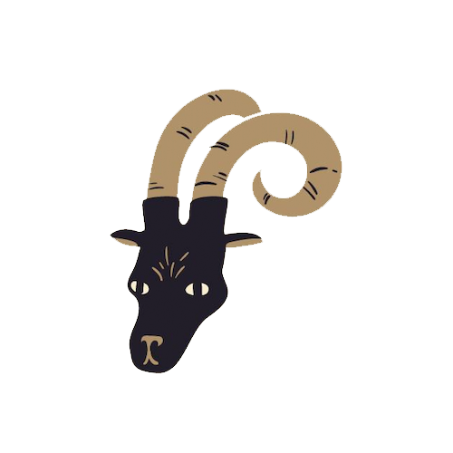

Magaskopet
Generelt
Stenbukken er et jordtegn og kendetegnes ved
sin disciplin, ambition og arbejdsomhed. Stenbukken er kendt for sin evne til at
arbejde hårdt og målrettet, ofte med et langsigtet perspektiv i tankerne. Den har
en stærk ansvarsfølelse og tager sine opgaver meget seriøst.
Som et mere introvert tegn foretrækker stenbukken at arbejde i ro og orden, hvor
den kan fokusere på sine mål uden for mange distraktioner. Dens logiske tilgang
til livet gør den i stand til at finde praktiske løsninger på selv de mest
komplekse problemer.
Stenbukken er også kendt for sin tålmodighed og vedholdenhed – den giver aldrig
op, selv når tingene bliver svære. Selvom den kan være lidt reserveret, er
stenbukken ekstremt loyal over for sine nærmeste og har en stærk følelse af pligt
og ansvar.
Se også generelle studietips her
Studietips
Stenbukken er som sagt ambitiøs, disciplineret og
elsker at opnå resultater. For dig er struktur og planlægning nøglen til effektiv
læring. Opret en realistisk og detaljeret tidsplan, hvor du opdeler dine studier
i overskuelige opgaver.
Du trives bedst i et roligt og professionelt miljø. Sørg for, at din studieplads
er funktionel, med alt hvad du behøver inden for rækkevidde – gode skriveværktøjer, dine noter og en klar to-do-liste.
Da Stenbukken ofte kan blive opslugt af sine mål, er det vigtigt at huske pauser.
Giv dig selv tid til at trække vejret og genoplade, så du kan forblive produktiv
uden at brænde ud.

Stenbukken
22. december - 19. januar